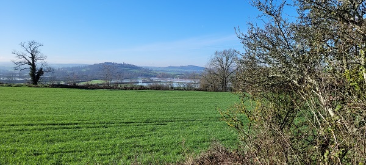

| https://fleursauvageyonne.github.io/ |

et d'ailleurs |
| 
|
| Où le mot "forêt" semble perdre parfois tout son sens. |
En abrégé FLSVY et d'ailleurs
(FLeurs SauVages de l'Yonne et d'ailleurs)
 |
Avec son menu accessible en cliquant sur l'icone
quelle que soit la page |
| ce petit herbier initialement icaunais, c'est-à-dire de l'Yonne (un département français), imaginé en 2005 par Claude Richard, botaniste amateur, pour trouver rapidement le nom d'une fleur latin ou français ou bien la reconnaître grâce à sa couleur, dans une forêt par exemple, un écosystème si COMPLEXE où les arbres seraient des alliés prioritaires face au changement climatique et la pollution de l’air ! | |
|
|
| Des alliés qui sont désormais totalement comparés aux hommes malgré leur intelligence si différente de la nôtre en déployant des systèmes de défense performants contre leurs agresseurs (plantes parasites ou compétitrices, virus et microbes pathogènes, insectes ravageurs) tout en continuant à nous donner leurs fleurs pas toujours visibles et même de sexe variable sur un même arbre ! | |
| Entrée ► | |
|  La Paix est Une Fleur. La Paix est Une Fleur. | |
| Giroflé, girofla - Rosa Holt (1935) | |

Erysimum cheiri (L.) Crantz, 1769,
la giroflée des murailles |
Que sont devenues les Graines de Paix
en 2024 ? |
Et que vont devenir ces graines
que Paris sèmera en AVRIL ? |
| Un frelon à pattes jaunes
est-il plus important que la paix en 2025 ? | |
Bienvenue ►
Welcome / Bienvenidos / Välkommen / Benvenuto
добро пожаловать / مَرْحَبا / Chào mừng
いらっしゃいませ / 欢迎
pարի գալուստ |
|
|
►  ► ►  |
Conception/maintenance informatiques
Annick Jani
Mise à jour : AVRIL 2025
 2005 à 2025 2005 à 2025 |